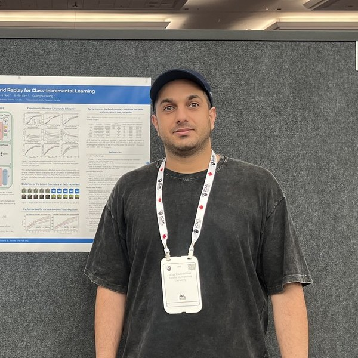

I am a Postdoctoral Fellow in the Department of Computer Science at Toronto Metropolitan University, working with Prof. Guanghui (Richard) Wang on continual and federated learning with pre-trained models. I earned my PhD in Electrical and Computer Engineering from Queen's University in 2024, supervised by Prof. Il-Min Kim, with a thesis on federated and incremental learning. My research builds a mathematical foundation for continual learning: task-confusion bounds that explain when forgetting must occur, the geometry of pre-trained representations that explains when it need not, and memory policies for continually learning agents.
mkn at torontomu.ca
miladkhademinori at gmail.com
Department of Computer Science
Toronto Metropolitan University
Toronto
Ontario
Canada